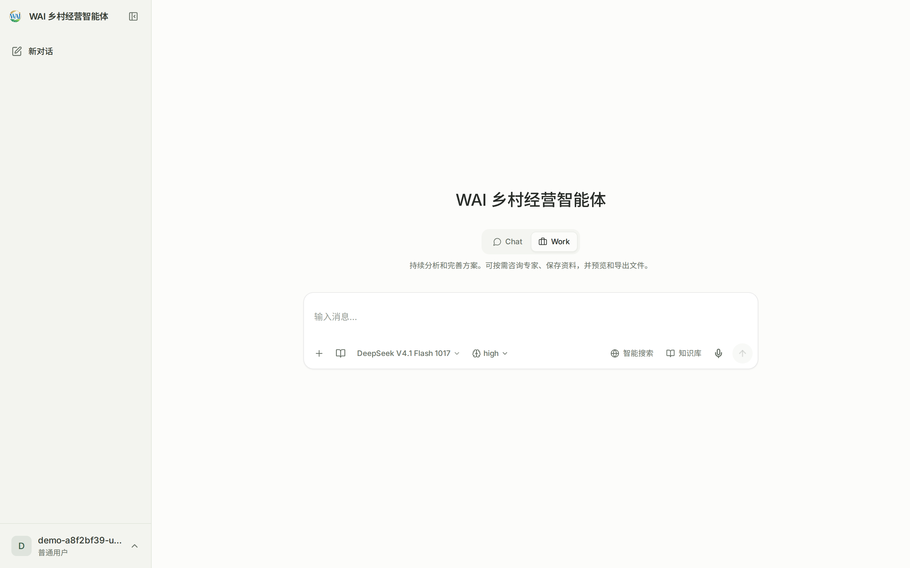
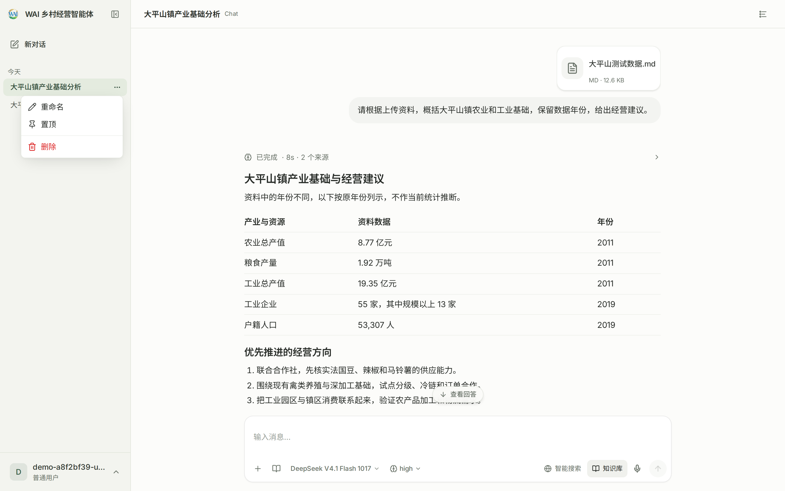
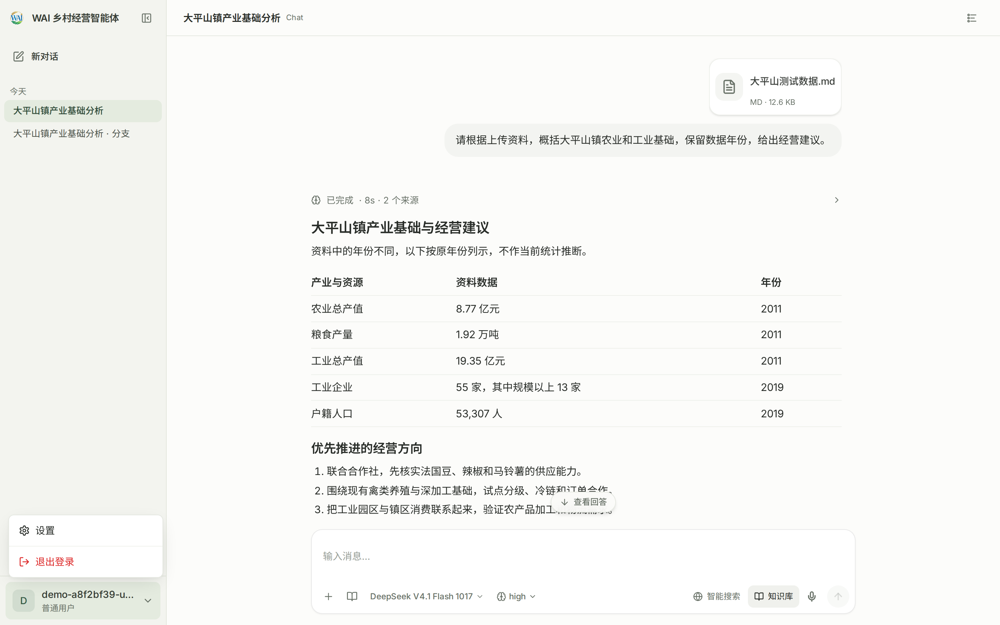

界面与基本操作
登录与界面
账号由管理员开通，对话、文件和报告都归你的账号。下面介绍登录，以及主界面三个区域的用法，便于日常工作中找到历史对话、上传材料和查看依据。
#登录
- 在浏览器中打开管理员提供的系统地址。没有登录时，页面会自动转到登录页。
- 输入账号和密码。
- 如果这台电脑只有你自己用，勾选「记住登录状态」。
- 点「登录」。

#没有账号，或忘记密码
系统不开放自行注册。账号由管理员创建，登录页底部写着「联系管理员获取账号」。
忘记密码时，也请联系管理员。管理员可以在后台为你「重置密码」。
#登录有效期
| 情况 | 保持时间 |
|---|---|
| 勾选了「记住登录状态」 | 最长 30 天 |
| 没有勾选 | 最长 12 小时 |
| 连续 7 天没有使用 | 自动退出，需要重新登录 |
如果管理员重置了你的密码，或调整了你的账号，所有设备上的登录都会失效，需要重新登录。
#退出登录
点左下角的用户卡片，在弹出的菜单里选「退出登录」。在公用电脑上用完后，请退出登录。
#登录后的界面

#左侧栏
左侧栏用来管理对话。
- 新对话。 点它开始一段新的对话。每段对话是独立的，互不影响。
- 历史对话列表。 你的所有对话按时间分组：置顶、今天、昨天、30 天内，更早的按月份。点其中一条，就回到那段对话。对话标题由系统根据你的第一个问题自动生成。
- 对话操作。 把鼠标移到某条对话上，会出现「对话操作」按钮，里面有三项：重命名、置顶（再点一次取消置顶）、删除。
- 收起与展开。 左上角的按钮可以收起侧栏，让中间的对话区更宽。再点一次展开。
- 用户卡片。 左下角显示你的账号和角色。点开后有「设置」「退出登录」；管理员还有「管理后台」。

#中间的对话区
中间区域在两种状态下看起来不同。
新对话时，页面中央显示「WAI 乡村经营智能体」，下面是 Chat 和 Work 两个标签，再下面是一行该方式的说明，最后是输入框。在这里选好方式，再写问题。
对话进行中，页面顶部显示对话标题和一个小标签，标签写着这段对话使用的方式。标题下方依次是你的提问和助手的回答，底部是输入框，可以接着追问。
#右侧的会话详情
当本轮对话产生了文件、专家或来源时，右侧会出现「会话详情」面板。它把这些内容集中放在一处，不用在长长的对话里翻找。详见会话详情。
#回答区的几个小控件
- 查看回答 / 回到底部跟随最新内容。 当你向上翻看以前的内容时，对话区下方会出现这个按钮。点它回到最新位置。
- 停止。 助手回答时，输入框右下角的发送按钮变成方块，点它可以中途停止。
#用户菜单
点左下角的用户卡片打开菜单。

| 菜单项 | 作用 | 谁能看到 |
|---|---|---|
| 设置 | 外观、个人资料、修改密码、个性化、用量 | 所有人 |
| 管理后台 | 创建账号、查看全部用户的用量 | 管理员 |
| 退出登录 | 结束当前登录 | 所有人 |
设置里的每一项，见账户设置。